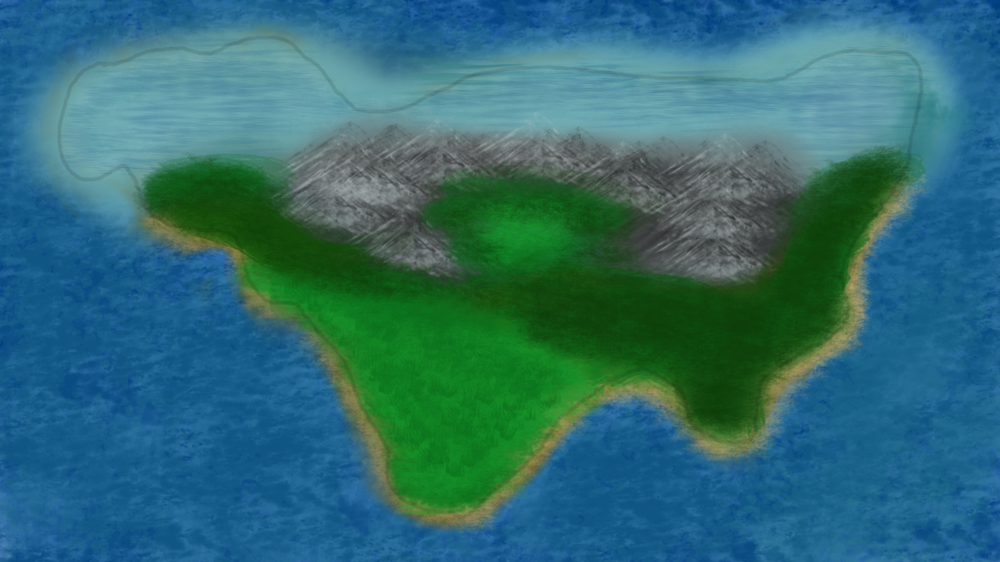
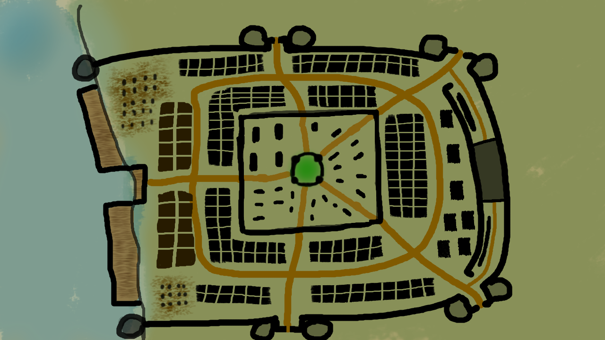

This is the map of the Everfar Continent.
The continent is often the home to the strongest
country at the time. During times of war, it is often
where summits are held and Kings and Queens are
established. While other continents may be the world
power during an era, that has never detracted from
the importance of the continent. People of all
nations gather here and trade flourishes in its
cities.

This is the map of the Everfar Capital.
The Capital is the home to many. Regardless of the time period,
this city was where the ruling powers resided. The mingling
of many races and ways of life has caused a culture to emerge
that is completely unique to the city.
Towards the center of the town resides the nobles and their home. The center castle
is the home of the Empire's ruler and contains the main meeting
spot for politcal figures. The rest of the city contains the homes for the
citizens. Towards the west are the markets that hug the ports of the Capital.
This market is one of the largest trading hubs throughout the world and
many companies have their humble origins here. North and South of the markets
are the slums. Due to their close proximity to the markets, it is not uncommon
for muggings and assaults to occur.
There are major buildings towards the East and nearby are the barracks housing new
recruits to the Empire's military. Guard towers line the city and there are only four
entrances for citizens (or enemies) to get in and out.